一、实验平台
1.1平台简介
EMSBC2410 开发平台是一款基于 ARM9 的嵌入式开发实验平台，它基于三星公司的 ARM9 处理器 S3C2410A，它适用于设计工业控制、消费电子、移动手持设备类产品，具有高性能、低功耗、接口丰富、功能可剪裁、体积小等优良特性。EMSBC2410 平台外设丰富，包含串口、USB 主口、USB 从口、网卡、SD 卡、音频、键盘、液晶屏、触摸屏、JTAG 调试口、NORFLASH、Nandflash 存储系统、扩展IO口等资源。
1.2平台图示

1.3元件布局
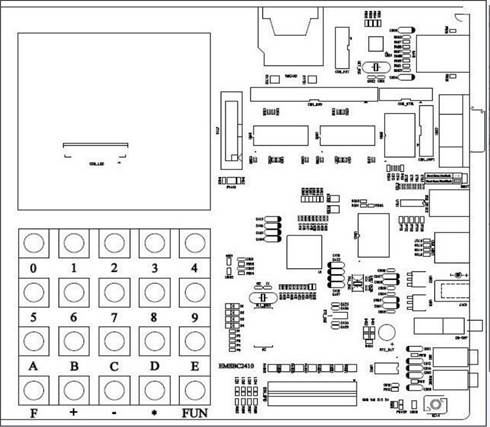
1.4开发环境
Ø RealView MDK开发工具源自德国Keil公司，是ARM公司最新推出的针对各种嵌入式处理器的软件开发工具。
q 包括Vision集成开发环境
q RealView编译器
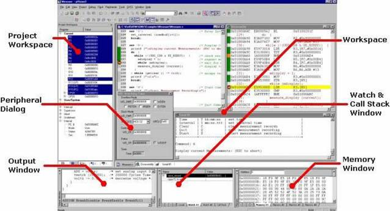
二、实验内容
1.ARM开发基础
（1）实验目的
- 了解“EMSBC2410实验平台”的基本硬件组成;
- 初步学会使用 μVision3 IDE for ARM 开发环境及ARM 软件模拟器;
- 通过实验掌握简单 ARM 汇编指令的使用方法。
（2）实验内容
- 熟悉开发环境的使用并使用 ldr/str，mov 等指令访问寄存器或存储单元;
- 学习使用 add/sub/lsl/lsr/and/orr 等指令，完成基本算术/逻辑运算;
- 设计实现表达式y=a*8+b/2-c，并验证之;
- 完成分支程序设计，要求判断参数，根据不同参数，调用不同的子程序。
（3）实验原理
- ARM9 处理器内核共有 37 个寄存器：
- 31 个通用寄存器，包括程序计数器(PC)。这些寄存器都是 32 位的;
- 6 个状态寄存器。这些寄存器也是32 位的，但是只是使用了其中的12 位。

大端格式：字数据的高位字节存储在低地址中，而字数据的低位字节则存放在高地址中。

小端格式：字数据的高位字节存储在高地址中，而字数据的低位字节则存放在低地址中。
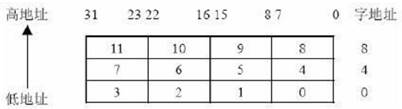
ENTRY：设置程序默认入口点，一个程序可有多个 ENTRY，但一个源文件最多只有一个。
EQU 伪操用于将数字常量、基于寄存器的值和程序中的标号定义为一个字符名称。
IMPORT (EXTERN 功能完全相同)用于声明在其他模块中定义但需要在本文件中使用的符号。
EXPORT（GLOBAL 功能完全相同）用于声明在本文件中定义但能在其他模块中使用的变量，相当于定义了一个全局变量。
AREA 用于定义一个代码段或数据段，ARM 汇编程序设计采用分段式设计，一个 ARM 源程序至少有一个代码段，大的程序会有若干个代码段和数据段。
语法格式：AREA segment-name, class-name, attributes ,...
（4）实验步骤
1.4.1验证示例源码
- 拷贝整个实验例程源码目录到本地磁盘自己的工作目录下;
- 使用μVision IDE for ARM 通过ULINK2仿真器连接实验板，打开实验例程目录ARM体系\1.1_asm1子目录下的asm_1a.Uv2 例程，编译链接工程;
- 该工程配置为在模拟器中运行，可调试程序，观察结果;
- 验证实验例程目录ARM体系\1.2_asm2子目录下的asm2.Uv2 例程。
1.4.2设计实现自己的汇编程序
- 拷贝示例实验源码工程;
- 编辑汇编源程序;
- 设计实现表达式y=a*8+b/2-c，并验证之;
- 设计利用函数跳转表实现子程序调用，并验证之。
（5）实验结果
1.5.1已验证示例程序
1.5.2
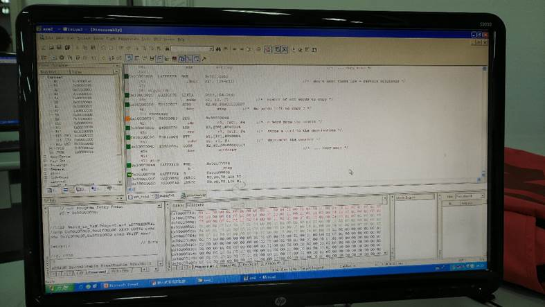
（6）程序说明
设计实现表达式y=a*8+b/2-c，并验证之
mov r0, #_a ;r0=1
LSL ro, #3 ;r0=r0*8
mov r1, #_b ;r1=2
LSR r1, #1 ;r1=r1/2
add r0, r0, r1 ;r0=r0+R1
sub r0, r0, #_c ;R0=R0-3
设计利用函数跳转表实现子程序调用，并验证之
AREA Jump，CODE，READONLY ;设置本段程序的
;名称（Jump）及属性
num EQU 2 ;跳转表中的子程序个数
ENTRY ;程序执行的入口点
Start
MOV r0，#0 ;设置3个参数，然后调用子程序 ;arithfunc，进行算术运算
MOV r1，#3
MOV r2，#2
BL arithfunc ;调用子程序arithfunc
Stop ;程序退出
MOV r0， #0x18
LDR r1，=0x20026
SWI 0x123456
Arithfunc ;子程序arithfunc入口点
CMP r0，#num ;判断选择子程序的参数是否在
;有效范围之内
MOVHS pc，lr ;若不在，则直接返回
ADR r3，JumpTable ;读取跳转表的基地址（ADR是伪指令）
LDR pc，[r3，r0，LSL #2] ;根据参数r0的值跳转到
;相应的子程序
JumpTable
DCD DoAdd
DCD DoSub
DoAdd ;子程序DoAdd执行加法操作
ADD r0，r1，r2
MOV pc，lr
DoSub ;子程序DoSub执行减法操作
SUB r0，r1，r2
MOV pc，lr
END ;结束汇编
（7）总结
以前学过8086汇编，ARM汇编与之相比更加灵活和实用（例如更多寄存器的使用等），函数跳转表实现了更加方便的函数管理。在ARM汇编时也要更加注意应该遵守的编写规则。
2．S3C2410基本接口实验
（1）实验目的
- 掌握S3C2410X 芯片的I/O 控制寄存器的配置;
- 通过实验掌握ARM 芯片使用I/O 口控制LED 显示;
- 了解ARM 芯片中复用I/O 口的使用方法;
- 通过实验掌握键盘控制与设计方法。
- 熟练编写 ARM 核处理器S3C2410X 中断处理程序。
（2）实验内容
- 编写程序，控制实验平台的发光二极管LED1、LED2、LED3、LED4，使它们有规律的点亮和熄灭;
- 使用实验板上 5x4 用户键盘，编写程序接收键盘中断;
- 使用键盘控制发光二极管，按照不同模式点亮。
（3）实验原理
S3C2410X 芯片上共有 71 个多功能的输入输出管脚，他们分为 7 组 I/O 端口。
- 一个 23 位的输出端口（端口 A）;
- 两个 11 位的输入/输出端口（端口 B、H）;
- 四个 16 位的输入/输出端口（端口 C、D、E、G）;
- 一个 8 位的输入/输出端口（端口 F）;
可以很容易的每组端口来满足不同系统配置和设计的需要。在运行程序之前必须对每个用到的管脚功能进行设置，如果某些管脚的复用功能没有使用，可以先将该管脚设置为 I/O 口。

实验原理图

键盘连接电路
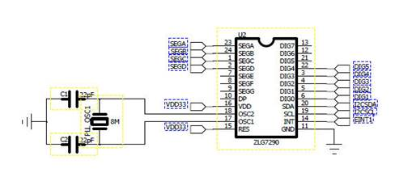
键盘控制电路
（4）实验步骤
2.4.1验证示例源码
- 拷贝整个实验例程源码目录到本地磁盘自己的工作目录下;
- 使用μVision IDE for ARM 通过ULINK2仿真器连接实验板，打开实验例程目录02_led_test 子目录下的led_test. Uv2 例程，编译链接工程;
- 调试程序，观察运行结果;
- 打开实验例程目录12_KeyBoardTest子目录下的KeyBoardTest.Uv2 例程，编译链接工程
- 调试程序，观察运行结果。
2.4.2设计实现自己的I/O控制程序
- 拷贝示例实验源码工程;
- 设计程序，实现使用键盘控制发光二极管按照不同模式点亮。
（5）实验结果

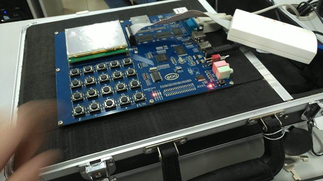
（6）程序说明
|
|
（7）总结
通过对变量的异或操作，实现对灯亮与灭的控制。我认为，控制每个按键对应灯的情况，主要在最后的switch-case语句，根据每次出发的case不同来执行不同的函数（每个函数内部实现亮灭和时间长度的控制），而想要使亮灭的模式增多，就要在各个函数内部实现rGPBDAT这个变量取值的多样性。
3．人机接口实验
（1）实验目的
- 掌握液晶屏的使用及其电路设计方法;
- 掌握S3C2410X 处理器的LCD 控制器的使用;
- 通过实验掌握液晶显示文本及图形的方法与程序设计;
- 通过实验掌握触摸屏（TSP）的设计与控制方法。
（2）实验内容
- 掌握液晶屏作为人机接口界面的设计方法，并编写程序实现;
- 编程实现触摸屏坐标转换为液晶对应坐标;
- 编程实现由液晶屏和触摸屏构成的可以互动的人机界面，至少实现3屏。
（3）实验原理
液晶屏（LCD：Liquid Crystal Display）主要用于显示文本及图形信息。液晶显
示屏具有轻薄、体积小、低耗电量、无辐射危险、平面直角显示以及影像稳定不闪
烁等特点，因此在许多电子应用系统中，常使用液晶屏作为人机界面。
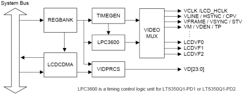
LCD 控制器框图
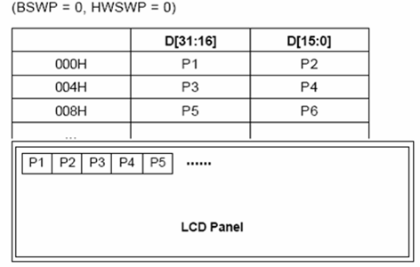
象素在内存中的表示
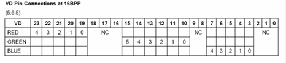
16 位TFT表示RGB示意图
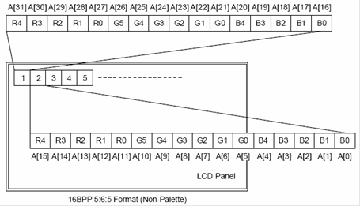
象素点的RGB示意图
显存位置**：**#define LCDFRAMEBUFFER 0x31000000
显存位于内存起始地址（0x3000 0000 ）偏移16M（0x0100 0000）的地方。
显存的大小：320×240×2 = 153600字节

触摸屏等效电路
（4）实验步骤
3.4.1验证示例源码
- 拷贝整个实验例程源码目录到本地磁盘自己的工作目录下;
- 使用μVision IDE for ARM 通过ULINK2仿真器连接实验板，打开实验例程目录11_LCD_Test 子目录下的LCD_Test.Uv2例程，编译链接工程;
- 调试程序，观察运行结果;
- 打开实验例程目录07_TSP_Test子目录下的TSP_Test.Uv2例程，编译链接工程;
- 调试程序，观察运行结果。
3.4.2设计实现自己的人机互动界面程序
- 拷贝示例实验源码工程;
- 设计程序实现由液晶屏和触摸屏构成的可互动的人机界面，至少实现3屏。
（5）实验结果
3.5.1已验证示例程序
3.5.2
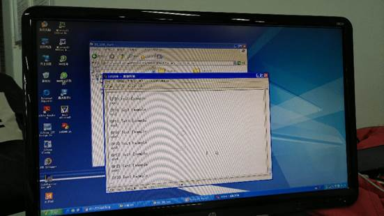

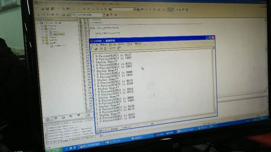

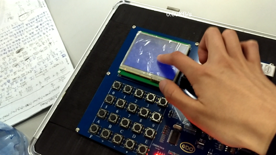
（6）程序说明
将tsp_test相关的程序文件以及依赖转入color_lcd_test的工程文件中并解决依赖关系。主要程序变动在color_lcd_test.c最后的for循环和复制过来的void __irq tsp_int(void)程序中。
- 将最后的for循环注释掉，只留一个tsp_test()，用于触摸屏幕时触发void tsp_test(void)函数以及void irq tsp_int(void)函数。
- 增加全局变量int nummun=0，int nummun_1;在void irq tsp_int(void)函数中对int nummun进行加1和模3运算，再根据nummun_1决定LCD变成哪种颜色。
nummun+=1;
nummun_1 = nummun%3;
if (nummun_1 == 0) Lcd_Clear(0x800);
if (nummun_1 == 1) Lcd_Clear(0x7e0);
if (nummun_1 == 2) Lcd_Clear(0x1f);
（7）总结
本实验对我来说是难度相比来说最大的一个，尤其是需要解决以下两个问题：
- 将两个项目的源码整合到一起并且解决依赖关系和库文件导入的问题。LCD_color_test的依赖关系复杂，将它移到tsp_test里比较困难（实施后发现问题太多，放弃此方案）;反过来后比较简单地解决了问题。
- 每次点击屏幕才会触发tsp的中断。刚开始我一直无法将tsp的程序段停下来，导致LCD屏幕一直在更换颜色，而我每次点击屏幕只是极短地延缓更换的时间;后我将更换颜色的程序块放入tsp的程序块内，创建全局变量每次加一，对此全局变量的拷贝进行取模运算达到循环更换颜色的结果。
解决了以上两个问题，即成功实现人机交互—点击屏幕更换颜色。
4、μC/OS-II系统原理实验
（1）实验目的
- 理解任务管理的基本原理，了解任务的各个基本状态及其变迁过程;
- 掌握µCOS-II中任务管理的基本方法;
- 创建、启动、挂起、解挂任务
- 掌握µCOS-II中任务使用信号量的一般原理
（2）实验内容
- 设计多个应用任务，验证任务管理函数;
- 通过实现“哲学家就餐”问题，验证信号量对任务间互斥访问的支持;
- 应用信号量实现任务间的同步，设计7个任务，并顺序执行
（3）实验原理：
建立两个任务 Task1 和 Task2：任务 Task1 不断地挂起自己，再被任务 Task2 解挂，两个任务不断地切换执行。并在串口打印相应的信息。用户可以通过串口进行观察。
一个任务通常是一个无限的循环 ，由于任务的执行是由操作系统内核调度的，
因此任务是绝不会返回的，其返回参数必须定义成 void。在 μC/OS-Ⅱ中，当一个运行着的任务使一个比它优先级高的任务进入了就绪态，当前任务的 CPU 使用权就会被抢占，高优先级任务会立刻得到 CPU 的控制权（在系统允许调度和任务切换的前提下）。μC/OS-Ⅱ可以管理多达 64 个任务，但目前版本的 μC/OS-Ⅱ有两个任务已经被系统占用了（即空闲任务和统计任务）。必须给每个任务赋以不同的优先级 ， 任 务 的 优 先 级 号 就 是 任 务 编 号 （ ID ）， 优 先 级 可 以 从 0 到OS_LOWEST_PRIORITY。优先级号越低，任务的优先级越高。μC/OS-Ⅱ总是运行进入就绪态的优先级最高的任务。


（4）实验步骤：
4.4.1验证示例源码
- 拷贝整个实验例程源码目录到本地磁盘自己的工作目录下;
- 使用μVision IDE for ARM 通过ULINK2仿真器连接实验板，打开实验例程目录04-uCOS\2.1_Task_test 子目录下的ucos2.Uv2例程，编译链接工程;
- 将程序下载到实验平台的 NorFlash 中，观察串口输出;
- 打开实验例程目录\04-uCOS\2.3_Semaphore_test子目录下的ucos2.Uv2例程，编译链接工程;
- 下载调试，观察结果。
4.4.2设计实现一个多任务应用程序
- 拷贝示例实验源码工程;
- 设计7个任务，并用信号量实现7个任务顺序执行，将执行结果在串口上打印出来。
（5）实验结果：
4.5.1已验证示例程序
4.5.2
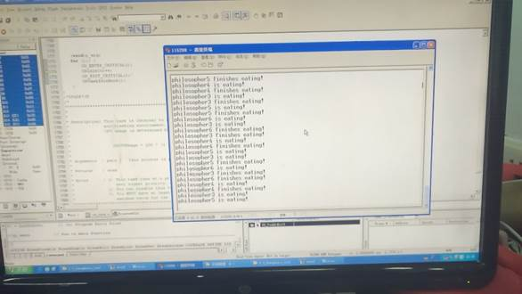

（6）程序说明
添加以下代码
|
|
每个task调整OSTimeDly()和OSTaskCreate中的最后一个值有10倍关系，调整OSSemPost()为模7后相邻的两位哲学家，例如第1为哲学家设置OSSemPost(sem1);OSSemPost(sem7);
（7）总结
最后一个实验相对前一个比较简单，主要点为以下两个：
- 从5个哲学家变7个，对应的变量和程序块应实现对应增加和关系之间的连接。
- OSTaskCreate这个函数设定的优先级应和后面OSTimeDly函数的参数有对应数学关系。
细心一点解决以上两个问题即可由5个哲学家变7个就餐。
在操作系统这门课里面有接触P、V操作，重要的是各个信号量的初值和PV操作的时机选择，并且在一个哲学家得不到另一支筷子时要释放已有的筷子，这样才能不会导致死锁问题。